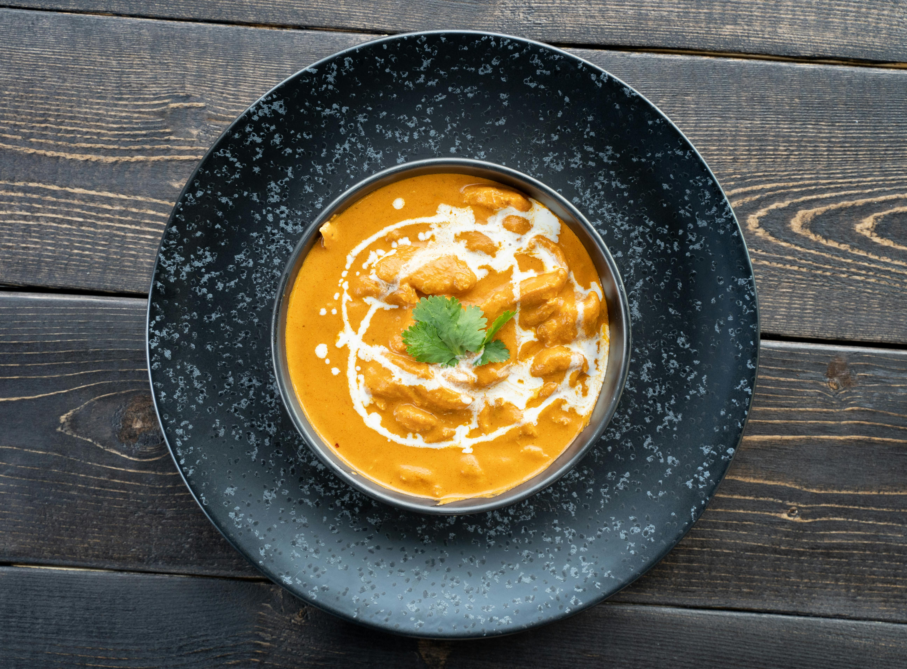

Get back to Home Page
Shahi Paneer

Description: [Taken from wikipedia]
Shahi paneer or Paneer Rajwadi or Chhena Rajwadi or Raajsi Chhena is a preparation of chhena or paneer, native to the Indian subcontinent, consisting of a thick gravy of cream, tomatoes and Indian spices.
Ingridients:
- Paneer
- Tomatoes
- Butter
- Spices
Steps:
- Get yourself some paneer.
- Get yourself some water.
- Cut the tomatoes.
- Do the rest yourself.